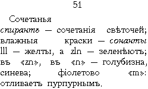
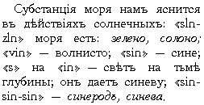

Glossolalia (Section 51)
GLOSSOLALIA

Combinations of spirants are -- combinations of luminescences; moist colors -- the sonants l l l are -- yellow, but zln -- turns greenlike [zeleneyut]; in "zn," in "n" there is -- a pale blueness, cyanic; "m" is violet: it pours our purplish.

The substance of the sea shines clearly to us in solar activities: "sln-zln" the sea is: green [zeleno], salty [solono]; "vln" is -- wavily [volnisto]; "sin" is -- cyanic [sine]; "s" on "in" is -- light upon the darkness of the deep; it gives a cyanic color [sineva]; "sin-sin-sin" is -- cyanogen, cyanic.